Clojure for Data Science
Why me?
I am in the final stages of producing a book "Clojure for Data Science".
It will be published via http://packtpub.com later this year.
Am I qualified?
I co-founded and was CTO of a data analytics company.
I am a software engineer, not a statistician.
Data Science Venn
"Once you have acquired and cleaned the data, the next step is to actually extract insight from it. In order to do this, you need to apply appropriate math and statistics methods, which requires at least a baseline familiarity with these tools. This is not to say that a PhD in statistics in required to be a competent data scientist, but it does require knowing what an ordinary least squares regression is and how to interpret it"
-Drew Conway
Data Science Venn

Drew Conway
Why is data science important?
The robots are coming!
The rise of the computational developer.
These trends influence the kinds of systems we are all expected to build.
Why Clojure?
Clojure lends itself to interactive exploration.
It's fantastic for manipulating data.
The JVM provides hosts many of the workhorse data processing frameworks.
What I will talk about
- Distributions
- Statistics
- Correlation
- Visualisation with Quil
- Linear regression
- Multivariate linear regression with Incanter
- Bayes classification
- Logistic regression with Apache Commons Math
- Clustering with Parkour
Follow along
The book's GitHub is available at http://github.com/clojuredatascience
- ch1-introduction
- ch2-statistical-inference
- ch3-linear-regression
- ch5-classification
- ch6-clustering
Part 1: Spotting election fraud
Loading data
Using incanter's excel namespace
(ns cljds.ch1.data (:require [incanter [core :as i] [excel :as xls]] [clojure.java.io :as io])) (defn uk-data [] (-> (io/resource "UK2010.xls") (str) (xls/read-xls)))
(i/view (uk-data))
Column names
(i/view (uk-data)) (i/col-names (uk-data)) ;; => ["Press Association Reference" "Constituency Name" "Region" "Election Year" "Electorate" "Votes" "AC" "AD" "AGS" "APNI" "APP" "AWL" "AWP" "BB" "BCP" "Bean" "Best" "BGPV" "BIB" "BIC" "Blue" "BNP" "BP Elvis" "C28" "Cam Soc" "CG" "Ch M" "Ch P" "CIP" "CITY" "CNPG" "Comm" "Comm L" "Con" "Cor D" "CPA" "CSP" "CTDP" "CURE" "D Lab" "D Nat" "DDP" "DUP" "ED" "EIP" "EPA" "FAWG" "FDP" "FFR" "Grn" "GSOT" "Hum" "ICHC" "IEAC" "IFED" "ILEU" "Impact" "Ind1" "Ind2" "Ind3" "Ind4" "Ind5" "IPT" "ISGB" "ISQM" "IUK" "IVH" "IZB" "JAC" "Joy" "JP" "Lab" "Land" "LD" "Lib" "Libert" "LIND" "LLPB" "LTT" "MACI" "MCP" "MEDI" "MEP" "MIF" "MK" "MPEA" "MRLP" "MRP" "Nat Lib" "NCDV" "ND" "New" "NF" "NFP" "NICF" "Nobody" "NSPS" "PBP" "PC" "Pirate" "PNDP" "Poet" "PPBF" "PPE" "PPNV" "Reform" "Respect" "Rest" "RRG" "RTBP" "SACL" "Sci" "SDLP" "SEP" "SF" "SIG" "SJP" "SKGP" "SMA" "SMRA" "SNP" "Soc" "Soc Alt" "Soc Dem" "Soc Lab" "South" "Speaker" "SSP" "TF" "TOC" "Trust" "TUSC" "TUV" "UCUNF" "UKIP" "UPS" "UV" "VCCA" "Vote" "Wessex Reg" "WRP" "You" "Youth" "YRDPL"]
Electorate
(defn uk-electorate [] (->> (uk-data) (i/$ "Electorate") (remove nil?))
Variance
\({ {1 \over n} \sum_{i=1}^n ( x_i - \mu_x )^2 }\)
…explained
\({\sum}\) is `(reduce + …)`.
\({ \sum_{i=1}^n }\) is "for all xs"
\({ ( x_i - \mu_x )^2 }\) is a function of x and the mean of x
(defn variance [xs] (let [m (mean xs) n (count xs) square-error (fn [x] (Math/pow (- x m) 2))] (/ (reduce + (map square-error xs)) n)))
Histogram
(require '[incanter.charts :as c]) (-> (uk-electorate) (c/histogram :nbins 20) (i/view))

Distibutions as models
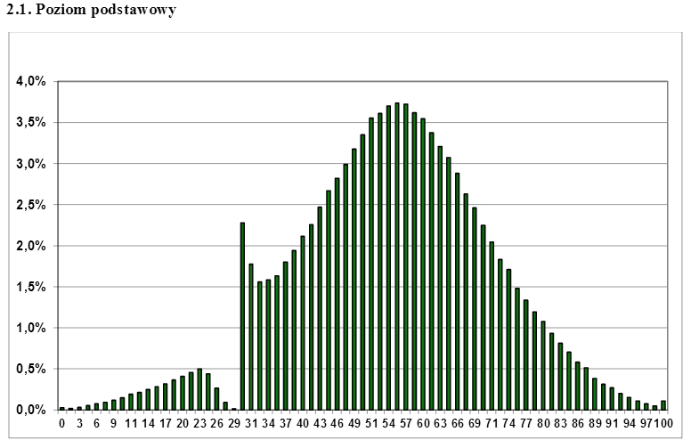
Poincaré's Bread
Poincaré weighed his bread every day for a year.
He discovered that the weights of the bread followed a normal distribution, but that the peak was at 950g, whereas loaves of bread were supposed to be regulated at 1kg. He reported his baker to the authorities.
The next year Poincaré continued to weigh his bread from the same baker, who was now wary of giving him the lighter loaves. After a year the mean loaf weight was 1kg, but this time the distribution was skewed to the left. This is consistent with the baker giving Poincaré only the heaviest of his loaves. The baker was reported to the authorities again
Honest Baker
(require '[incanter.distributions :as d]) (defn honest-baker [] (let [distribution (d/normal-distribution 1000 30)] (repeatedly #(d/draw distribution)))) (defn ex-1-16 [] (-> (take 10000 (honest-baker)) (c/histogram :nbins 25) (i/view)))
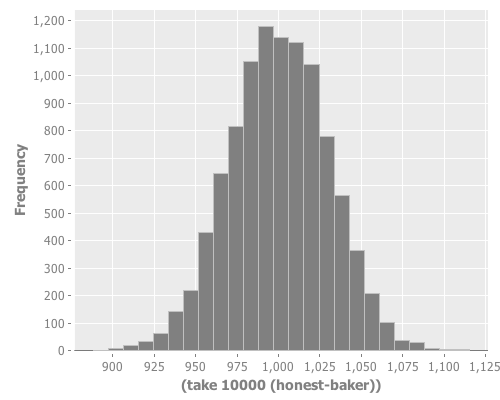
Dishonest Baker
(defn dishonest-baker [] (let [distribution (d/normal-distribution 950 30)] (->> (repeatedly #(d/draw distribution)) (partition 13) (map (partial apply max))))) (defn ex-1-17 [] (-> (take 10000 (dishonest-baker)) (c/histogram :nbins 25) (i/view)))
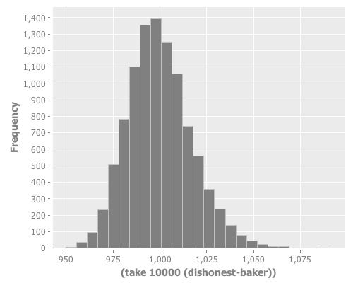
The importance of visualisation
Anscombe's Quartet: all have identical mean and standard deviation.
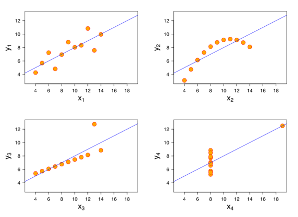
Selection
(defn filter-election-year [data] (i/$where {"Election Year" {:$ne nil}} data)) (defn filter-victor-constituencies [data] (i/$where {"Con" {:$fn number?} "LD" {:$fn number?}} data))
Projection
(->> (uk-data) (filter-election-year) (filter-victor-constituencies) (i/$ ["Region" "Electorate" "Con" "LD"]) (i/add-derived-column "Victors" ["Con" "LD"] +) (i/add-derived-column "Victors Share" ["Victors" "Electorate"] /) (i/view))
Two variables: scatter plots!
(let [data (->> (uk-data) (clean-uk-data) (derive-uk-data))] (-> (c/scatter-plot ($ "Turnout" data) ($ "Victors Share" data) :x-label "Turnout" :y-label "Victor's Share") (i/view)))
UK Votes scatter
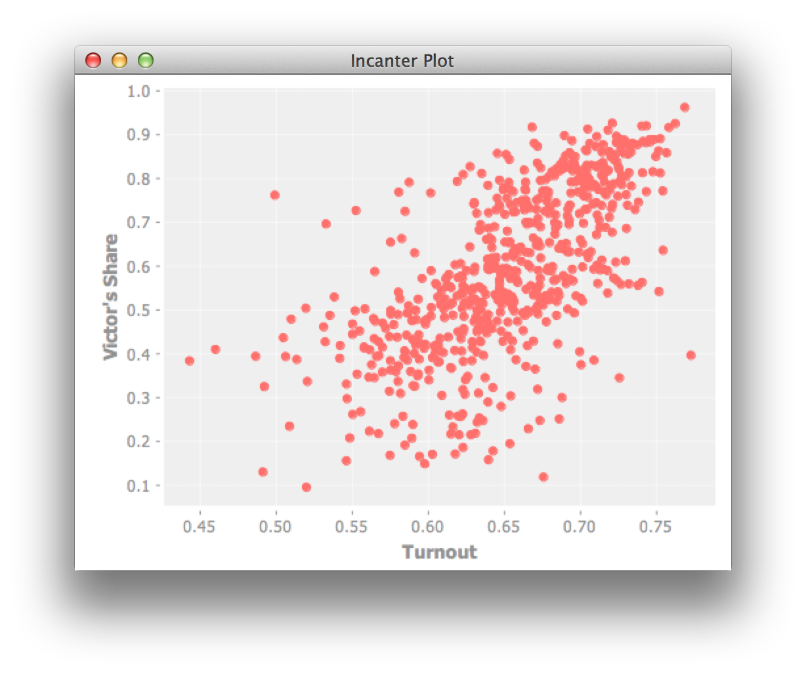
Russia is a bigger country
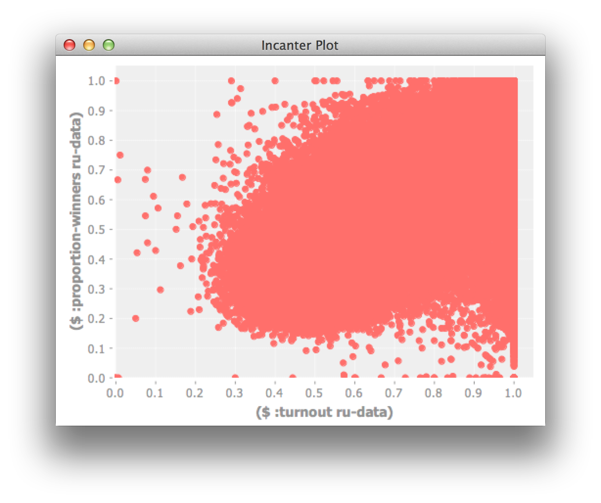
We need a better visualization
Binning data
(defn bin [n-bins xs] (let [min-x (apply min xs) range-x (- (apply max xs) min-x) max-bin (dec n-bins) bin-fn (fn [x] (-> x (- min-x) (/ range-x) (* n-bins) int (min max-bin)))] (map bin-fn xs))) (->> (uk-electorate) (bin 10) (frequencies)) ;; => {0 1, 1 1, 2 4, 3 22, 4 130, 5 320, 6 156, 7 15, 9 1}
A 2D histogram
(defn histogram-2d [xs ys n-bins] (-> (map vector (bin n-bins xs) (bin n-bins ys)) (frequencies))) (defn uk-histogram-2d [] (let [data (->> (uk-data) (clean-uk-data) (derive-uk-data))] (histogram-2d ($ "Turnout" data) ($ "Victors Share" data) 5))) ;; => {[2 1] 59, [3 2] 91, [4 3] 32, [1 0] 8, [2 2] 89, [3 3] 101, [4 4] 60, [0 0] 2, [1 1] 22, [2 3] 19, [3 4] 53, [0 1] 6, [1 2] 15, [2 4] 5, [1 3] 2, [0 3] 1, [3 0] 6, [4 1] 3, [3 1] 17, [4 2] 17, [2 0] 23}
Quil
Visualization with Quil
(require '[quil.core :as q]) (defn ratio->grayscale [f] (-> f (* 255) (int) (min 255) (max 0) (q/color))) (defn draw-histogram [data {:keys [n-bins size]}] (let [[width height] size x-scale (/ width n-bins) y-scale (/ height n-bins) max-value (apply max (vals data)) setup (fn [] (doseq [x (range n-bins) y (range n-bins)] (let [v (get data [x y] 0) x-pos (* x x-scale) y-pos (- height (* y y-scale))] (q/fill (ratio->grayscale (/ v max-value))) (q/rect x-pos y-pos x-scale y-scale))))] (q/sketch :setup setup :size size)))
A 2D histogram

A Colour heatmap
Interpolate between the colours of the spectrum.
(defn ratio->heat [f] (let [colors [(q/color 0 0 255) ;; blue (q/color 0 255 255) ;; turquoise (q/color 0 255 0) ;; green (q/color 255 255 0) ;; yellow (q/color 255 0 0)] ;; red f (-> f (max 0.000) (min 0.999) (* (dec (count colors))))] (q/lerp-color (nth colors f) (nth colors (inc f)) (rem f 1))))
A finished heatmap
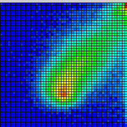
Credit
Proceedings of the National Academy of Sciences, titled "Statistical Detection of Election Irregularities," a team led by Santa Fe Institute External Professor Stefan Thurner
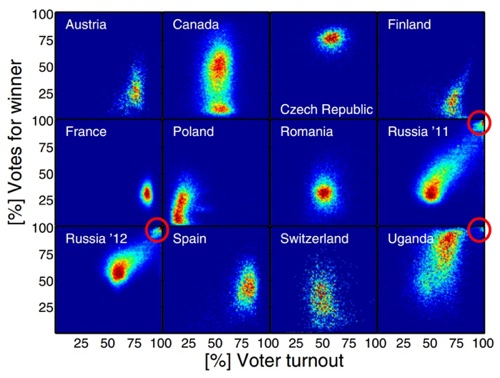
Inference
What are statistics anyway?
They are estimates of values, based on a sample.
What are parameters?
They are the true values, based on the entire population.
Sampling size
The values converge as the sample size increases.
We can often only infer the population parameters.
| Sample | Population |
|---|---|
| \({ n }\) | \({ N }\) |
| \({\bar X}\) | \({ \mu_X }\) |
| \({ S_X }\) | \({ \sigma_X }\) |
Reagent
(def population-mean 100) (def population-sd 20) (def sample-size 10)
Reagent atoms
(require '[reagent.core :as r]) (defn randn [mean sd] (.. js/jStat -normal (sample mean sd))) (defn normal-distribution [mean sd] (repeatedly #(randn mean sd))) (def state (r/atom {:sample []})) (defn update-sample! [state] (swap! state assoc :sample (->> (normal-distribution population-mean population-sd) (map int) (take sample-size))))
Create the widgets
(defn new-sample [state] [:button {:on-click #(update-sample! state)} "New Sample"]) (defn sample-list [state] [:div (let [sample (:sample @state)] [:div [:ul (for [n sample] [:li n])] [:dl [:dt "Sample Mean:"] [:dd (mean sample)]]])])
Lay out the interface
(defn layout-interface [] [:div [:h1 "Normal Sample"] [new-sample state] [sample-list state]]) ;; Render the root component (defn run [] (r/render-component [layout-interface] (.getElementById js/document "root")))
Demo
Standard Error
It's the standard deviation of the sample means.
\({SE =} { \sigma_X \over \sqrt{n} }\)
Standard Error
Let's see how the standard error changes with sample size
Demo
Small samples
The standard error is calculated from the population standard deviation, but we don't know it!
In practice they're assumed to be the same above around 30 samples, but there is another distribution that models the loss of precision with small samples.
T-distribution
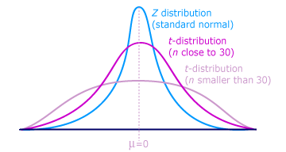
Calculating the t-statistic
Based entirely on our sample statistics
(defn t-statistic [sample test-mean] (let [sample-mean (mean sample) sample-size (count sample) sample-sd (standard-deviation sample)] (/ (- sample-mean test-mean) (/ sample-sd (Math/sqrt sample-size)))))
Demo
Why this interest in means?
Because often when we want to know if a difference in populations is statistically significant, we'll compare the means.
Hypothesis testing
By convention the data is assumed not to support what the researcher is looking for.
This conservative assumption is called the null hypothesis and denoted \({h_0}\).
The alternate hypothesis, \({h_1}\), can then only be supported with a given confidence interval.
Significance
The greater the significance of a result, the more certainty we have that the null hypothesis can be rejected.
Let's use our range controller to adjust the significance threshold.
Demo
Prediction
Question
What was Olympic swimmer Mark Spitz' competition weight?
Population of Olympic swimmers
The Guardian has helpfully provided data on the vital statistics of Olympians
http://www.theguardian.com/sport/datablog/2012/aug/07/olympics-2012-athletes-age-weight-height#data
Weight histogram
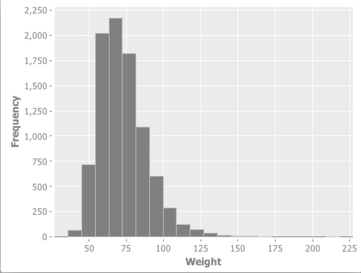
Log-Weight histogram
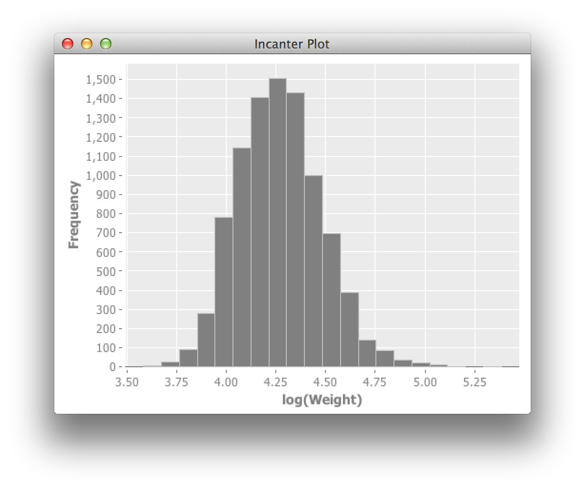
Log-Normal distribution
"A variable might be modeled as log-normal if it can be thought of as the multiplicative product of many independent random variables, each of which is positive. This is justified by considering the central limit theorem in the log-domain."
Scatter Plot
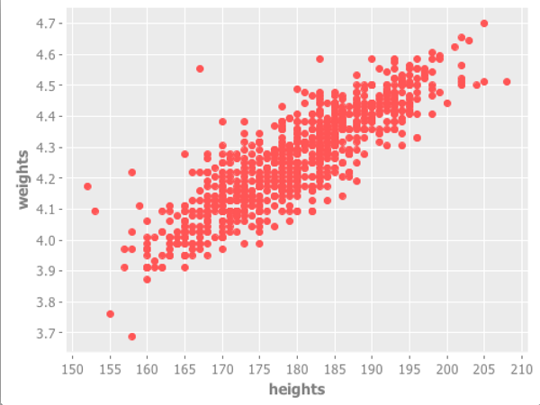
What is correlation anyway?
We've talked about variance in the context of the normal distribution
Covariance
How much things vary together!
\({COV(X,Y) = {1 \over n} { \sum_{i=1}^n ( x_i - \mu_x ) ( y_i - \mu_y )}}\)
Correlation
A few ways of measuring it, depending on whether your data is continuous or discrete

Pearson's correlation
Covarience divided by the product of standard deviations
Measures linear correlation.
\({\rho X,Y} = {COV(X,Y) \over \sigma_X \sigma_Y}\)
(defn pearsons-correlation [x y] (/ (covariance x y) (* (standard-deviation x) (standard-deviation y))))
Pearson's correlation
If \({r}\) is 0, it doesn’t necessarily mean that the variables are not correlated. Pearson’s correlation only measures linear relationships. There could still be some non-linear relationship between variables that isn’t captured by as demonstrated by the following plots.
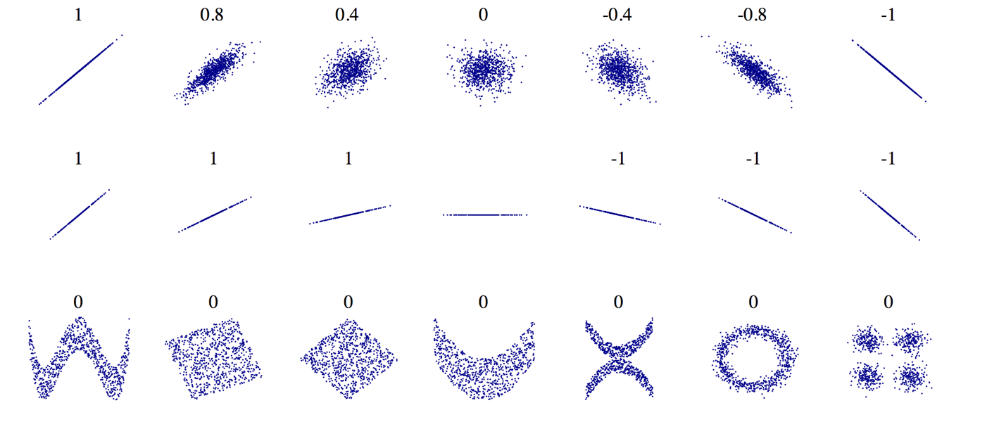
This is a statistic
The unknown population parameter for correlation is the Greek letter \({ \rho }\). We are only able to calculate the sample statistic \({ r }\).
How far we can trust \({ r }\) as an estimate of \({ \rho }\) will depend on two factors:
- the size of the coefficient
- the size of the sample
\({r X,Y} = {COV(X,Y) \over s_X s_Y}\)
Bivariate Regression
\({y = \alpha + \beta x }\)
Bivariate Regression
(defn slope [x y] (/ (covariance x y) (variance x))) (defn intercept [x y] (- (mean y) (* (mean x) (slope x y)))) (defn predict [a b x] (+ a (* b x)))
Training a model
(defn swimmer-data [] (->> (athlete-data) ($where {"Height, cm" {:$ne nil} "Weight" {:$ne nil} "Sport" {:$eq "Swimming"}}))) (defn ex-3-12 [] (let [data (swimmer-data) heights ($ "Height, cm" data) weights (log ($ "Weight" data)) a (intercept heights weights) b (slope heights weights)] (println "Intercept: " a) (println "Slope: " b)))
Making a prediction
(predict 1.691 0.0143 185) ;; => 4.3365 (i/exp (predict 1.691 0.0143 185)) ;; => 76.44
Corresponding to a predicted weight of 76.4kg
In 1979, Mark Spitz was 79kg.
http://www.topendsports.com/sport/swimming/profiles/spitz-mark.htm
More data!
(defn features [dataset col-names] (->> (i/$ col-names dataset) (i/to-matrix))) (defn gender-dummy [gender] (if (= gender "F") 0.0 1.0)) (defn ex-3-26 [] (let [data (->> (swimmer-data) (i/add-derived-column "Gender Dummy" ["Sex"] gender-dummy)) x (features ["Height, cm" "Age" "Gender Dummy"]) y (i/log ($ "Weight" data))] (s/linear-model y x))) ;; => [2.2307529431422637 0.010714697827121089 0.002372188749408574 0.0975412532492026]
Multivariate Linear Regression
$${y = \theta_0 + \theta_1 x_1 + ... + \theta_n x_n}$$
Making predictions
$${ y = \theta^T x }$$
(defn predict [theta x] (-> (cl/t theta) (cl/* x) (first))) (i/exp (predict (matrix (:coefs lm)) (matrix [1 185 22 1])) ;; => 78.46882772631697
How close?
The result is around 78.47kg.
Compared to 79kg, we were pretty close!
Interlude
Classification
Question
Did all passengers on the Titanic have an equal chance of survival?
Grab the data
Data is based on Thomas Cason's Titanic3 dataset. Information on how this was constructed is here.
http://biostat.mc.vanderbilt.edu/wiki/pub/Main/DataSets/titanic3info.txt
Inspect the data
| Class | Survived | Name | Sex | Age |
|---|---|---|---|---|
| 1 | 1 | Allen, Miss. Elisabeth Walton | female | 29 |
| 1 | 0 | Allison, Mr. Hudson Joshua Creighton | male | 30 |
Categorical variables
| Survived | Perished | |
|---|---|---|
| Male | 161 | 682 |
| Female | 339 | 127 |
Standard error for a proportion
$${SE = \sqrt{ p(1-p) \over n } }$$
(defn standard-error-proportion [p n] (-> (- 1 p) (* p) (/ n) (Math/sqrt)))
$${ {161 + 339 \over 682 + 127} = {500 \over 809} = 0.61 }$$ $${SE = 0.013 }$$
How significant?
$${z = { p_1 - p_2 \over SE }}$$
P1: the proportion of women who survived is \({ 339 \over 446 }\) = 0.76
P2: the proportion of men who survived = \({161 \over 843 }\) = 0.19
SE: 0.013
z = 20.36
This is essentially impossible.
More categories
| Survived | Perished | |
|---|---|---|
| First Class | 200 | 123 |
| Second Class | 119 | 158 |
| Third Class | 181 | 528 |
Our approach doesn't scale
We can use a \({ \chi^2 }\) test.
(defn ex-5-5 [] (let [observations (i/matrix [[200 119 181] [123 158 528]])] (s/chisq-test :table observations)))
How likely is that this distribution occurred via chance?
{:X-sq 127.85915643930326, :col-levels (0 1 2), :row-margins {0 500.0, 1 809.0}, :table [matrix] , :p-value 1.7208259588256175E-28, :df 2, :probs nil, :col-margins {0 323.0, 1 277.0, 2 709.0}, :E (123.37662337662337 199.62337662337663 105.80595874713522 171.1940412528648 270.8174178762414 438.1825821237586), :row-levels (0 1), :two-samp? true, :N 1309.0}
P-value
"The estimated probability of rejecting the null hypothesis \({h_0}\) of a study question when that hypothesis is true."
Probability
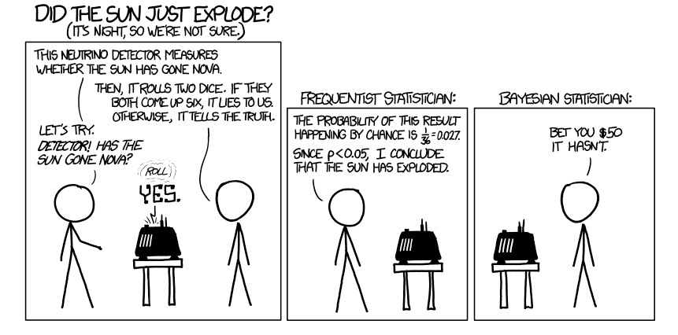
Bayes Rule
$${P(A|B) = { P(B|A)P(A) \over P(B) }}$$
\({ P(A) }\) initial degree of belief in A (the prior)
Bayes titanic
$${ P(survive|female) = { P(female|survive) P(survive) \over P(female) } }$$
$${ P(survive|female) = { {339 \over 500 } {500 \over 1309} \over {446 \over 1309 }} = { 339 \over 446 } }$$
Bayes classification
$${ P(survive |third,male) = { p(survive) p(third|survive) p(male|survive) \over p(third,male)} }$$
$${ P(perish |third,male) = { p(perish) p(third|perish) p(male|perish) \over p(third,male) } }$$
Because the evidence is the same for all classes, we can cancel this out.
Parse the data
(titanic-samples) ;; => ({:survived true, :gender :female, :class :first, :embarked "S", :age "20-30"} {:survived true, :gender :male, :class :first, :embarked "S", :age "30-40"} ...)
Implementing a Naive Bayes model
(defn safe-inc [v] (inc (or v 0))) (defn inc-class-total [model class] (update-in model [class :total] safe-inc)) (defn inc-predictors-count-fn [row class] (fn [model attr] (let [val (get row attr)] (update-in model [class attr val] safe-inc))))
Implementing a Naive Bayes model
(defn assoc-row-fn [class-attr predictors] (fn [model row] (let [class (get row class-attr)] (reduce (inc-predictors-count-fn row class) (inc-class-total model class) predictors)))) (defn naive-bayes [data class-attr predictors] (reduce (assoc-row-fn class-attr predictors) {} data))
Naive Bayes model
(let [data (titanic-samples)] (pprint (naive-bayes data :survived [:gender :class])))
…produces the following output…
{false {:class {:third 528, :second 158, :first 123}, :gender {:male 682, :female 127}, :total 809}, true {:class {:third 181, :second 119, :first 198}, :gender {:male 161, :female 337}, :total 498}}
Making predictions
(defn n [model] (->> (vals model) (map :total) (apply +))) (defn conditional-probability [model test class] (let [evidence (get model class) prior (/ (:total evidence) (n model))] (apply * prior (for [kv test] (/ (get-in evidence kv) (:total evidence)))))) (defn bayes-classify [model test] (let [probs (map (fn [class] [class (conditional-probability model test class)]) (keys model))] (-> (sort-by second > probs) ffirst)))
Does it work?
(defn ex-5-7 [] (let [data (titanic-samples) model (naive-bayes data :survived [:gender :class])] (bayes-classify model {:gender :male :class :third}))) ;; => false (defn ex-5-8 [] (let [data (titanic-samples) model (naive-bayes data :survived [:gender :class])] (bayes-classify model {:gender :female :class :first}))) ;; => true
Why Naive?
Because it assumes all variables are independent. We know they are not (e.g. being male and in third class) but naive bayes weights all attributes equally.
In practice it works surprisingly well, particularly where there are large numbers of features.
Logistic Regression
Logistic regression
Logistic regression uses similar techniques to linear regression but guarantees an output only between 0 and 1.
$${h_\theta(x) = \theta^T x}$$
$${h_\theta(x) = g(\theta^T x)}$$
Where the sigmoid function is
$${ g(z) = { 1 \over 1 + e^{-z}} }$$
The logistic function

The logistic function
(defn logistic-function [theta] (let [tt (matrix/transpose (vec theta)) z (fn [x] (- (matrix/mmul tt (vec x))))] (fn [x] (/ 1 (+ 1 (Math/exp (z x)))))))
Interpretation
(let [f (logistic-function [0])] (f [1]) ;; => 0.5 (f [-1]) ;; => 0.5 (f [42]) ;; => 0.5 )
(let [f (logistic-function [0.2]) g (logistic-function [-0.2])] (f [5]) ;; => 0.73 (g [5]) ;; => 0.27 )
Cost function
Cost varies between 0 and (a big number).
(defn cost-function [y y-hat] (- (if (zero? y) (Math/log (max (- 1 y-hat) Double/MIN_VALUE)) (Math/log (max y-hat (Double/MIN_VALUE)))))) (defn logistic-cost [ys y-hats] (avg (map cost-function ys y-hats)))
Converting Titanic data to features
(defn titanic-features [] (remove (partial some nil?) (for [row (titanic-data)] [(:survived row) (:pclass row) (:sibsp row) (:parch row) (if (nil? (:age row)) 30 (:age row)) (if (= (:sex row) "female") 1.0 0.0) (if (= (:embarked row) "S") 1.0 0.0) (if (= (:embarked row) "C") 1.0 0.0) (if (= (:embarked row) "Q") 1.0 0.0)])))
Calculating the gradient
(defn gradient-fn [h-theta xs ys] (let [g (fn [x y] (matrix/mmul (- (h-theta x) y) x))] (->> (map g xs ys) (matrix/transpose) (map avg))))
We transpose to calculate the average for each feature across all xs rather than average for each x across all features.
Gradient descent
The cost function will be lowest when the parameters are at their optimum.

Apache Commons Math
Provides heavy-lifting for running tasks like gradient descent.
Java :(
(:import [clojure.lang IFn] [org.apache.commons.math3.analysis MultivariateFunction MultivariateVectorFunction ParametricUnivariateFunction] [org.apache.commons.math3.optim InitialGuess MaxEval SimpleBounds OptimizationData SimpleValueChecker PointValuePair] [org.apache.commons.math3.optim.nonlinear.scalar ObjectiveFunction ObjectiveFunctionGradient GoalType MultivariateOptimizer] [org.apache.commons.math3.optim.nonlinear.scalar.gradient NonLinearConjugateGradientOptimizer NonLinearConjugateGradientOptimizer$Formula])
Clojure's Java interop
An object wrapper to represent a function: too many levels of indirection?!
(defn objective-function [f] (ObjectiveFunction. (reify MultivariateFunction (value [_ v] (apply f (vec v)))))) (defn objective-function-gradient [f] (ObjectiveFunctionGradient. (reify MultivariateVectorFunction (value [_ v] (double-array (apply f (vec v)))))))
Gradient Descent
(defn make-ncg-optimizer [] (NonLinearConjugateGradientOptimizer. NonLinearConjugateGradientOptimizer$Formula/FLETCHER_REEVES (SimpleValueChecker. (double 1e-6) (double 1e-6)))) (defn initial-guess [guess] (InitialGuess. (double-array guess))) (defn max-evaluations [n] (MaxEval. n)) (defn gradient-descent [f g estimate n] (let [options (into-array OptimizationData [(objective-function f) (objective-function-gradient g) (initial-guess estimate) (max-evaluations n) GoalType/MINIMIZE])] (-> (make-ncg-optimizer) (.optimize options) (.getPoint) (vec))))
Running Gradient Descent
(defn run-logistic-regression [data initial-guess] (let [points (titanic-features) xs (->> points (map rest) (map #(cons 1 %))) ys (map first points)] (gradient-descent (fn [& theta] (let [f (logistic-function theta)] (logistic-cost (map f xs) ys))) (fn [& theta] (gradient-fn (logistic-function theta) xs ys)) initial-guess 2000)))
Producing a model
(defn ex-5-11 [] (let [data (titanic-features) initial-guess (-> data first count (take (repeatedly rand)))] (run-logistic-regression data initial-guess)))
Making predictions
(def logistic-theta [0.9884451497898937 -0.9582211820237765 -0.2942204909975665 -0.008340184840488646 -0.03219717794854576 2.6351942087729614 0.5946571788582461 1.2192345883060776 0.6481382214058901]) (defn round [x] (Math/round x)) (def logistic-model (logistic-function logistic-theta)) (defn ex-5-13 [] (let [data (titanic-features) test (fn [x] (= (round (logistic-model (cons 1 (rest x)))) (round (first x)))) results (frequencies (map test data))] (/ (get results true) (apply + (vals results))))) ;; => 1028/1309
Evaluating the classifier
Cross-validation: we want to separate our test and training data sets
Bias vs variance: your model may fail to generalise
Clustering
Clustering
Find a grouping of a set of objects such that objects in the same group are more similar to each other than those in other groups.
Similarity measures
Many to choose from: Jaccard, Euclidean.
For text documents the Cosine measure is often chosen.
- Good for high-dimensional spaces
- Positive spaces the similarity is between 0 and 1.
Cosine similarity
$${ cos( \theta ) = { A \cdot B \over \| A \| \| B \| } }$$
(defn cosine [a b] (let [dot-product (->> (map * a b) (apply +)) magnitude (fn [d] (->> (map #(Math/pow % 2) d) (apply +) Math/sqrt))] (/ dot-product (* (magnitude a) (magnitude b)))))
Creating sparse vectors
(def dictionary (atom {:count 0 :words {}})) (defn add-word-to-dict [dict word] (if (get-in dict [:words word]) dict (-> dict (update-in [:words] assoc word (get dict :count)) (update-in [:count] inc)))) (defn update-words [dict doc word] (let [word-id (-> (swap! dict add-word-to-dict word) (get-in [:words word]))] (update-in doc [word-id] #(inc (or % 0))))) (defn document-vector [dict ngrams] (r/reduce (partial update-words dict) {} ngrams))
Example
(->> (split "the quick brown fox jumps over the lazy dog" #"\W") (document-vector dictionary)) ;; => {7 1, 6 1, 5 1, 4 1, 3 1, 2 1, 1 1, 0 2} @dictionary ;; => {:words {"dog" 7, "lazy" 6, "over" 5, "jumps" 4, "fox" 3, "brown" 2, "quick" 1, "the" 0}, :count 8}
Stemming / Stopwords
(stemmer/stems "it's lovely that you're musical") ;; => ("love" "music")
Why?
(cosine-sparse (->> "music is the food of love" stemmer/stems (document-vector dictionary)) (->> "war is the locomotive of history" stemmer/stems (document-vector dictionary))) ;; => 0.0
(cosine-sparse (->> "music is the food of love" stemmer/stems (document-vector dictionary)) (->> "it's lovely that you're musical" stemmer/stems (document-vector dictionary))) ;; => 0.8164965809277259
Example
(->> "it's lovely that you're musical" stemmer/stems (document-vector dictionary)) ;; => {0 1, 2 1} @dictionary ;; => {:count 6, :words {"histori" 5, "locomot" 4, "war" 3, "love" 2, "food" 1, "music" 0}}
Mahout
"The Apache Mahout™ project's goal is to build an environment for quickly creating scalable preformant machine learning applications."
Get the data
We're going to be clustering the Reuters dataset.
Follow the readme instructions:
script/download-reuters.sh lein run -e 6.7 mahout seqdirectory -i data/reuters-txt -o data/reuters-sequencefile
Vector representation
Each document is converted into a vector representation.
All vectors share a dictionary providing a unique index for each word.
Sequencefiles
Input:
- org.apache.hadoop.io.Text
- org.apache.hadoop.io.Text
Output (Vectors):
- org.apache.hadoop.io.Text
- org.apache.mahout.math.VectorWritable
Output (Dictionary):
- org.apache.hadoop.io.Text
- org.apache.mahout.math.IntWritable
Parkour
Parkour is a Clojure library for interacting with Hadoop.
It provides a thinner layer of abstraction than PigPen and Cascalog.
TF-IDF
Term frequency, inverse document frenquency.
$${tfidf(t, d, D) = tf(t, d) \cdot idf(t, D) }$$
We need a unique index for each word
We need a way of computing a unique index in parallel
Parkour Mapping
(require '[clojure.core.reducers :as r] '[parkour.mapreduce :as mr]) (defn document->terms [doc] (clojure.string/split doc #"\W+")) (defn document-count-m "Emits the unique words from each document" {::mr/source-as :vals} [documents] (->> documents (r/mapcat (comp distinct document->terms)) (r/map #(vector % 1))))
Parkour uses Clojure's reducers. Can supply metadata informing Parkour how we'd like to receive our data.
Shape metadata
:keyvals ;; Re-shape as vectors of key-vals pairs. :keys ;; Just the keys from each key-value pair. :vals ;; Just the values from each key-value pair.
Just normal functions
(->> (document-count-m ["it's lovely that you're musical" "music is the food of love" "war is the locomotive of history"]) (into [])) ;; => [["love" 1] ["music" 1] ["music" 1] ["food" 1] ["love" 1] ["war" 1] ["locomot" 1] ["histori" 1]]
And reducing…
(require '[parkour.io.dux :as dux] '[transduce.reducers :as tr]) (defn unique-index-r {::mr/source-as :keyvalgroups, ::mr/sink-as dux/named-keyvals} [coll] (let [global-offset (conf/get-long mr/*context* "mapred.task.partition" -1)] (tr/mapcat-state (fn [local-offset [word counts]] [(inc local-offset) (if (identical? ::finished word) [[:counts [global-offset local-offset]]] [[:data [word [[global-offset local-offset] (apply + counts)]]]])]) 0 (r/mapcat identity [coll [[::finished nil]]]))))
We have access to the MapReduce context, can get the partition number
Creating a job
(require '[parkour.graph :as pg] '[parkour.avro :as mra] '[abracad.avro :as avro]) (def long-pair (avro/tuple-schema [:long :long])) (def index-value (avro/tuple-schema [long-pair :long])) (defn df-j [dseq] (-> (pg/input dseq) (pg/map #'document-count-m) (pg/partition (mra/shuffle [:string :long])) (pg/reduce #'unique-index-r) (pg/output :data (mra/dsink [:string index-value]) :counts (mra/dsink [:long :long]))))
Writing to Distributed Cache
(require '[parkour.io.dval :as dval]) (defn calculate-offsets "Build map of offsets from dseq of counts." [dseq] (->> dseq (into []) (sort-by first) (reductions (fn [[_ t] [i n]] [(inc i) (+ t n)]) [0 0]) (into {}))) (defn df-execute [conf dseq] (let [[df-data df-counts] (pg/execute (df-j dseq) conf `df) offsets-dval (dval/edn-dval (calculate-offsets df-counts))] ...))
Reading from distributed cache
(defn global-id "Use offsets to calculate unique id from global and local offset" [offsets [global-offset local-offset]] (+ local-offset (get offsets global-offset))) (defn words-idf-m "Calculate the unique id and inverse document frequency for each word" {::mr/sink-as :keys} [offsets-dval n coll] (let [offsets @offsets-dval] (r/map (fn [[word [word-offset df]]] [word (global-id offsets word-offset) (Math/log (/ n df))]) coll))) (defn make-dictionary [conf df-data df-counts doc-count] (let [offsets-dval (dval/edn-dval (calculate-offsets df-counts))] (-> (pg/input df-data) (pg/map #'words-idf-m offsets-dval doc-count) (pg/output (mra/dsink [words])) (pg/fexecute conf `idf) (->> (r/map parse-idf) (into {})) (dval/edn-dval))))
Creating text vectors
(import '[org.apache.mahout.math RandomAccessSparseVector]) (defn create-sparse-vector [dictionary [id doc]] (let [vector (RandomAccessSparseVector. (count dictionary))] (doseq [[term freq] (-> doc document->terms frequencies)] (let [term-info (get dictionary term)] (.setQuick vector (:id term-info) (* freq (:idf term-info))))) [id vector])) (defn create-vectors-m [dictionary coll] (let [dictionary @dictionary] (r/map #(create-sparse-vector dictionary %) coll)))
The finished job
(import '[org.apache.hadoop.io Text] '[org.apache.mahout.math VectorWritable]) (defn tfidf [conf dseq dictionary-path vector-path] (let [doc-count (->> dseq (into []) count) [df-data df-counts] (pg/execute (df-j dseq) conf `df) dictionary-dval (make-dictionary conf df-data df-counts doc-count)] (write-dictionary dictionary-path dictionary-dval) (-> (pg/input dseq) (pg/map #'create-vectors-m dictionary-dval) (pg/output (seqf/dsink [Text VectorWritable] vector-path)) (pg/fexecute conf `vectorize)))) (defn tool [conf input output] (let [dseq (seqf/dseq input) dictionary-path (doto (str output "/dictionary") fs/path-delete) vector-path (doto (str output "/vectors") fs/path-delete)] (tfidf conf dseq dictionary-path vector-path))) (defn -main [& args] (System/exit (tool/run tool args)))
K-Means
K-Means

Running clustering
script/run-kmeans.sh
#!/bin/bash
WORK_DIR=data
INPUT_DIR=${WORK_DIR}/parkour-vectors
mahout kmeans \
-i ${INPUT_DIR}/vectors \
-c ${WORK_DIR}/clusters-out \
-o ${WORK_DIR}/kmeans-out \
-dm org.apache.mahout.common.distance.CosineDistanceMeasure \
-x 20 -k 5 -cd 0.01 -ow --clustering
mahout clusterdump \
-i ${WORK_DIR}/kmeans-out/clusters-*-final \
-o ${WORK_DIR}/clusterdump.txt \
-d ${INPUT_DIR}/dictionary/part-r-00000 \
-dt sequencefile \
-dm org.apache.mahout.common.distance.CosineDistanceMeasure \
--pointsDir ${WORK_DIR}/kmeans-out/clusteredPoints \
-b 100 -n 20 -sp 0 -e
How many clusters?
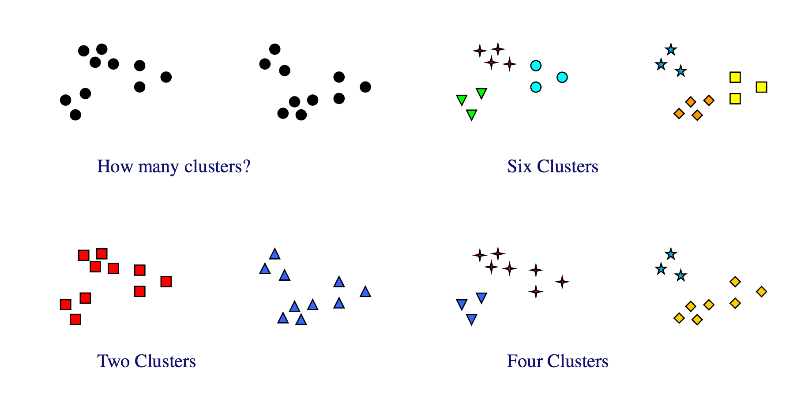
What did I leave out?
- Spectral and LDA clustering
- Cluster quality measures
- Collaborative filtering with Mahout
- Spark for movie recommendations with Sparkling
- Graph data with Loom and Datomic
- MapReduce with Cascalog and PigPen
- Adapting algorithms for massive scale
- Time series and forecasting
- Dimensionality reduction
- More visualisation techniques
Book
Clojure for Data Science will be available in the second half of the year from http://packtpub.com.
Slides
Thank you!
Henry Garner
@henrygarner